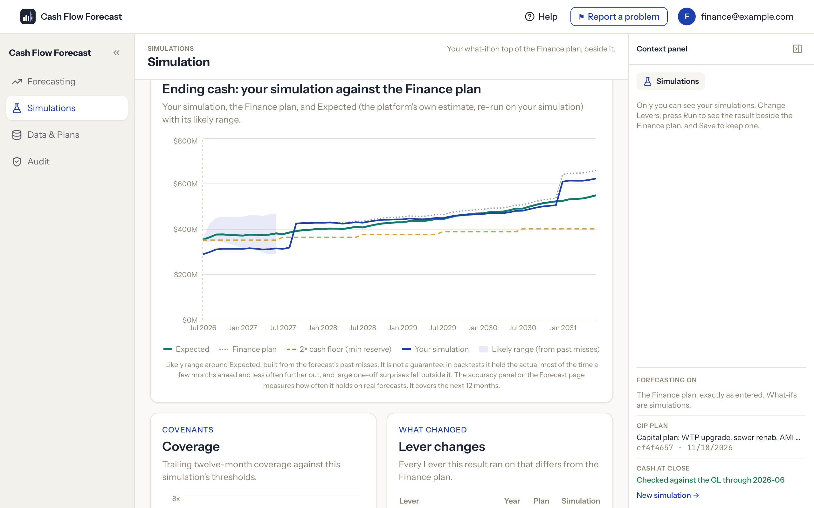

The TPM who still ships to production
Technical Project Manager at Navteca. I lead products from the first conversation to production, and I still write, review and release the code.
Cash Flow Forecast, live at a US water utility since November 2026; Voice Atlas and Open Science Studio, in production for years; and Navteca's JupyterLab extensions.
About five a week on Cash Flow Forecast. Each one is blocked automatically if a scan finds a fixable critical flaw or a leaked secret.
Four open-source JupyterLab extensions that researchers install with one command: BXplorer, NBQueue, API Baker and Resource Tracker.
What I'm running
Everything I work on, sorted by priority. Select a row to see what it is, what I did and the proof.
| PROCESS | STATUS | SINCE | MY ROLE |
|---|
Cash Flow Forecast, from idea to go-live

The problem
A US water utility's Finance team needed to see its cash five years ahead, check it against its reserve and debt covenants every month, and test decisions like rate changes or new bonds before making them.
What I did
Led it end to end: product direction with the client's finance and AI leadership, the architecture, the security model and the release process, through to go-live in November 2026 as a SaaS product on Navteca's Azure.
What shipped
Forecasts with an honest likely range, private what-if simulations, a "view as of" any past date with an audit trail, an in-app guide and narrated video walkthroughs.
How it stays safe
Each customer's data is walled off at the database. Every release is scanned for vulnerabilities and leaked secrets, reviewed for security, and promoted to production unchanged from what was tested.
How I work
Start from the problem
I sit with the people who own the problem, turn it into a plan the team can follow, and keep risks and decisions written down.
Stay hands-on
I write and review code every week: Python, TypeScript, Go and Swift. It keeps my estimates honest and my reviews useful.
Ship small, ship safe
Small changes, tests written first, and an automatic security check that can stop a release before it reaches users.
Things I built on my own
Products I designed, built and run myself, on nights and weekends. Each has a live site.